映像の世界観と
編集方法の提案
女性ホルモンで読み解く50代の体｜落ち着いたナレーション＋意味に沿って切り替わる映像・静止画・図解
1. 参照資料から読み取った確定済み方針
視聴者に教え込む医療チャンネルではなく、50代女性が「別々に見えた変化を、一枚の地図として理解する」ための伴走型チャンネルです。
内容・立ち位置
- エストロゲン低下を一本の軸に、肌・髪・骨・血管・脳・心・体型・睡眠をつなぐ
- 医師・先生として診断せず、「私も調べ、試し、理解していく」立場
- 食事チャンネルとは「何を食べるか／なぜ変わるか」で棲み分ける
- HRTや薬は中立的に扱い、治療効果を断定しない
声・編集
- 同世代女性の落ち着いた声。中低音、約0.9倍、240〜300字／分
- 耳だけで筋が追え、画面は理解と情景を補う
- 全字幕。意味単位で約10秒を基本に切り替える
- 静止画の緩い寄り・横移動、フェード、段階表示を中心にする
資料上まだ未確定：正式なチャンネル設定と言葉の辞書は空欄が多く、動画台本も未作成です。本資料の60秒例は、第1回推奨テーマ「閉経後、体で起きること全部。1枚の地図にしてみました」の仮冒頭で具体化しています。
2. 今回の提案で決めること
今回の推薦
光るからだの地図 60%＋ホルモンの光の旅 25%＋エビデンス／生活小物 15%。
臓器・組織・光の経路だけで「全身がつながる」を伝え、演者や人物像に一切依存しません。
採用しない方向
実写・AIを問わず、人物、人型シルエット、顔、手、感情芝居、ビフォーアフターは使用しません。人物の印象とAI感が内容を上書きするためです。
薬・ホルモンで体が光る表現：「効いて治る」演出ではなく、体内で情報が運ばれる概念図として使用します。薬を扱う回は、効果・副作用・個人差・医療者への相談を音声と字幕で明示します。
シネマティックは「第6案」ではなく、全案に共通する仕上げ
映画的な空気は、人物や大げさなドラマではなく、光・奥行き・緩やかなカメラ・音の余白で作ります。常に動画を流すのではなく、冒頭、体内の機序がつながる瞬間、章の転換、終わりの余韻に絞る方針です。
禁止：人物・顔・手・人型シルエット／予告編のような重低音／不安を煽る暗さ／「飲むと全身が治る」と受け取られる発光。
3. 世界観5案の比較
| 案 | 核になる画 | 映画的な強み | 見やすさ | 継続性 | 主な注意 |
|---|---|---|---|---|---|
| 1 光るからだの地図 主力推薦 | 器官・組織＋発光ノード | ◎ 光と多層の奥行き | ◎ 一目で関係が分かる | ○ テンプレ化可能 | 医学的誤配置の監修 |
| 2 ホルモンの光の旅 | 分子・光が全身へ移動 | ◎ マクロ移動の見せ場 | ○ 動きが理解を助ける | △ 動画生成は要検品 | 薬効保証に見せない |
| 3 静かな医学雑誌 | 写真断片＋図版＋余白 | ○ 紙と光の静かな映画感 | ◎ 情報整理に強い | ◎ 静止画量産向き | 一般的な雑誌風に埋没 |
| 4 自然科学の標本室 | 標本・質感・シャーレ | ◎ 博物館的なマクロ感 | ○ 比喩で入りやすい | ○ AI静止画向き | 漢方・自然療法に誤認させない |
| 5 書斎のエビデンス | 本・図版・真鍮灯 | ◎ 陰影とスローパン | ○ 根拠パートに強い | ◎ 素材を反復利用可能 | 暗く重くなりやすい |
4. 静止画20枚｜同じ4場面で比較
画像を押すと拡大します。字幕は画像生成に含めず、編集時に同じフォントで重ねる前提です。全画像は画面・字幕の配置見本で、本人の実績や治療効果を示すものではありません。
光るからだの地図
「体の中で何が起きているのかが、怖すぎず、直感的に分かる」。臓器・骨格組織・血管・皮膚・毛髪をガラス標本のように並べ、コーラルとセージの光でつなぎます。
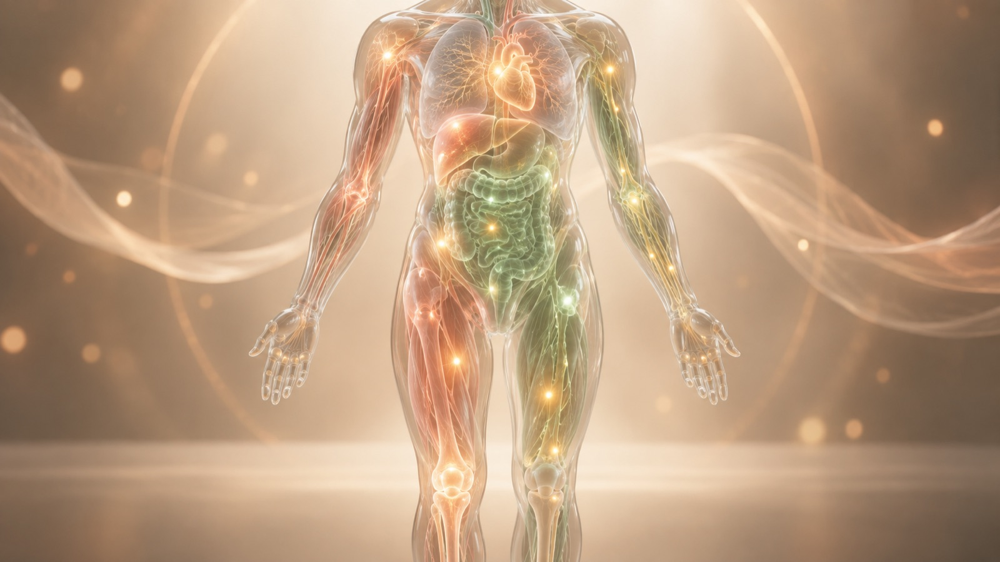
配置見本①問い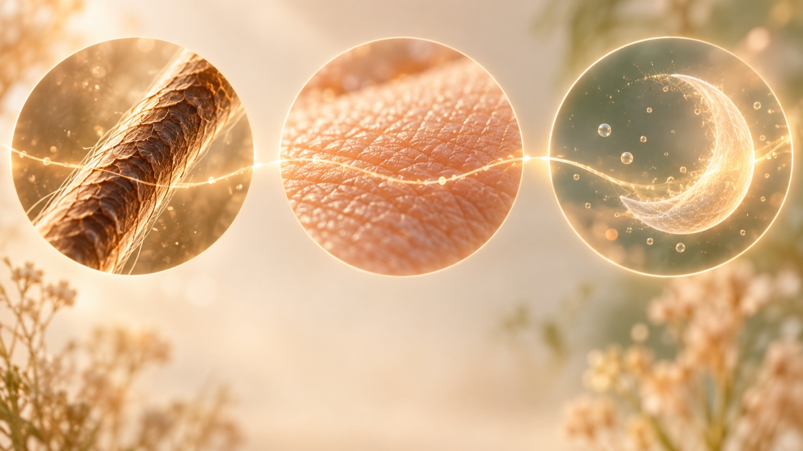
配置見本②日常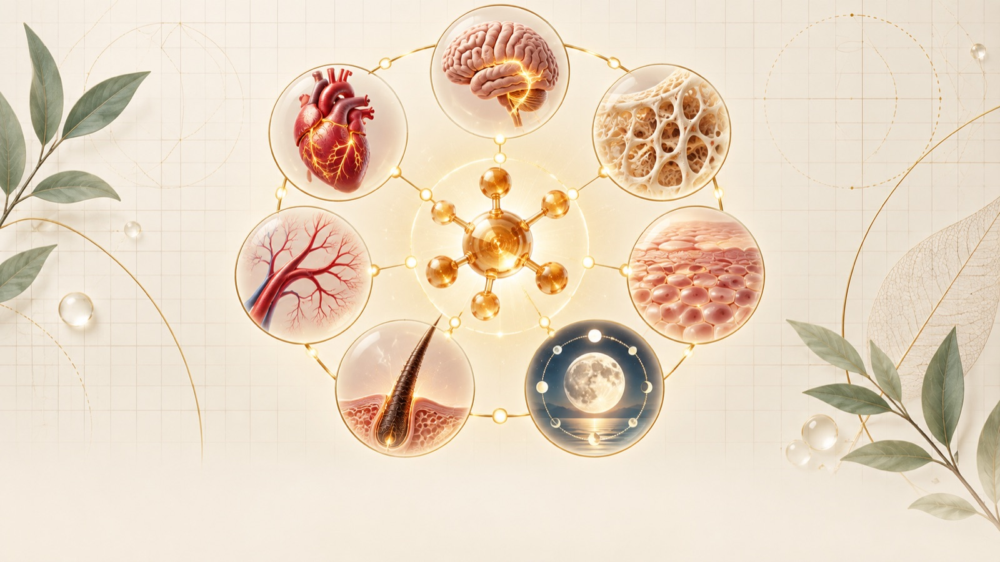
配置見本③図解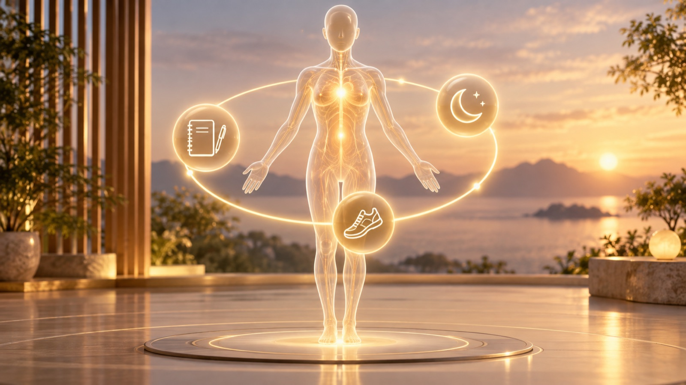
配置見本④まとめホルモンの光の旅
「見えない情報が、体の中を巡り、複数の場所へ届く」。マクロな管・分岐・粒子・光を主役にします。
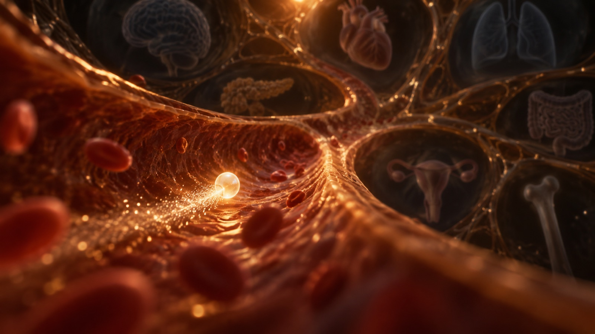
配置見本①問い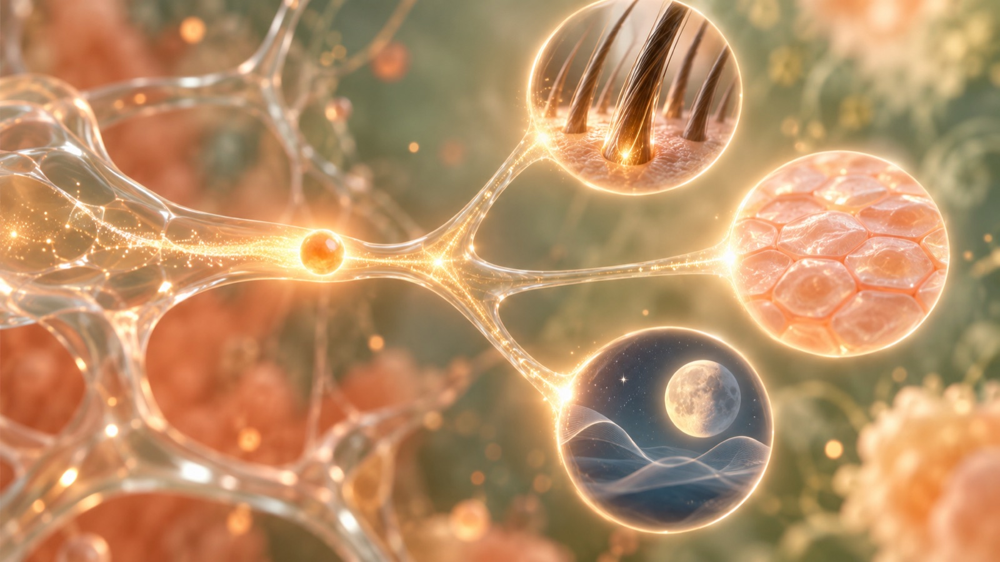
配置見本②日常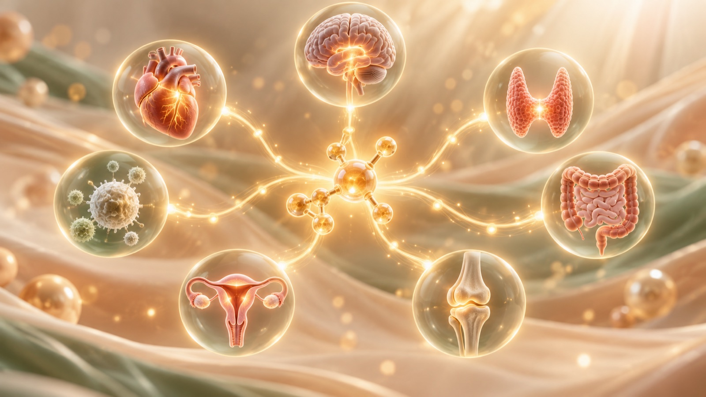
配置見本③図解静かな医学雑誌
「難しい話が、整理されていて読みやすい」。生成画像の一枚絵に頼らず、写真断片・図版・紙面レイアウトでAI感を薄めます。
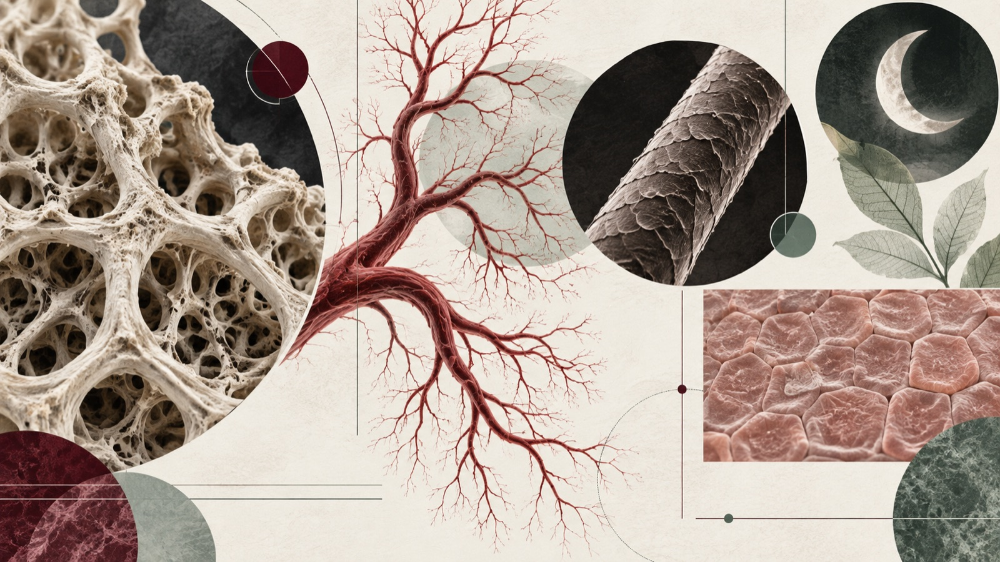
配置見本①問い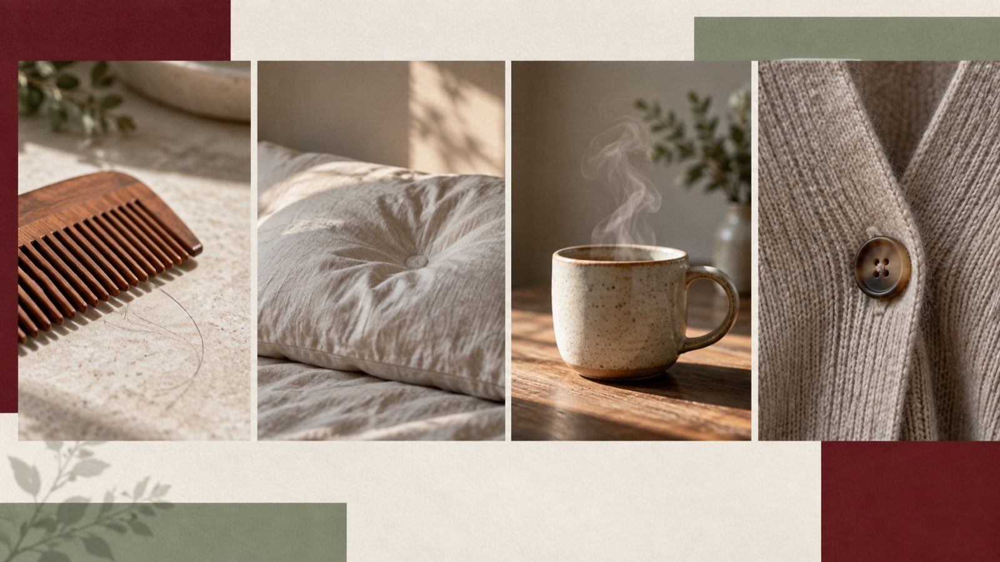
配置見本②日常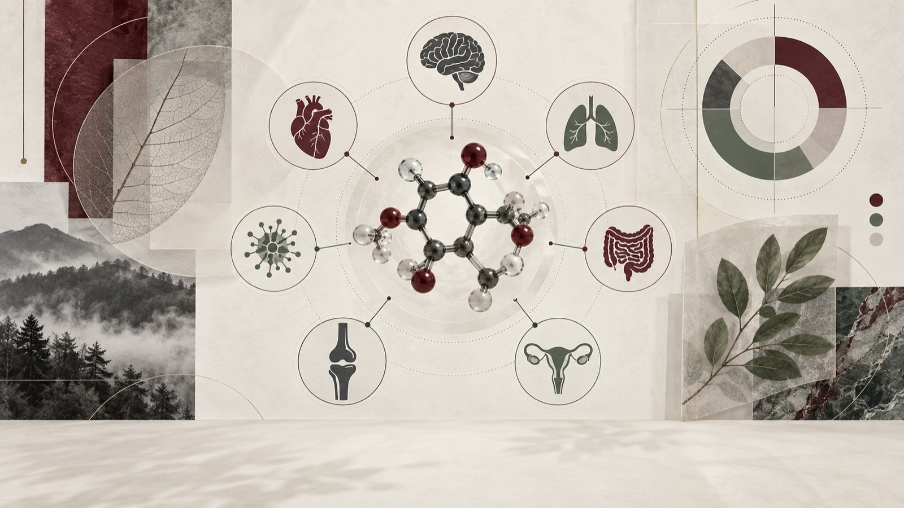
配置見本③図解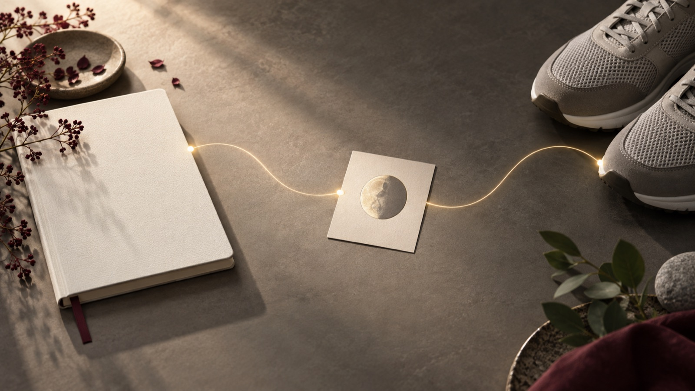
配置見本④まとめ自然科学の標本室
「体は壊れたのではなく、変化している」。標本瓶、シャーレ、葉脈、鉱物、手漉き紙の質感で、冷たい医療感を避けます。
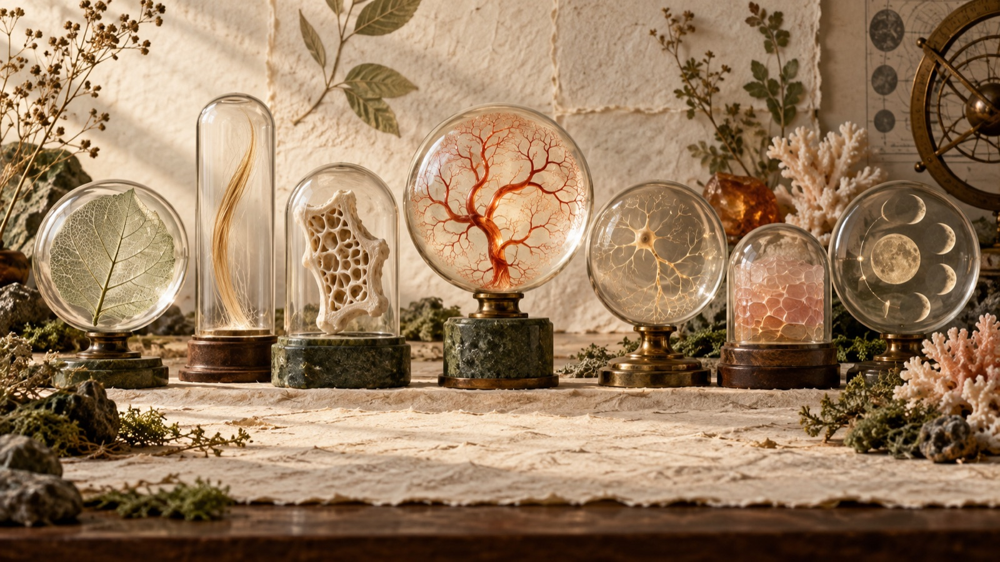
配置見本①問い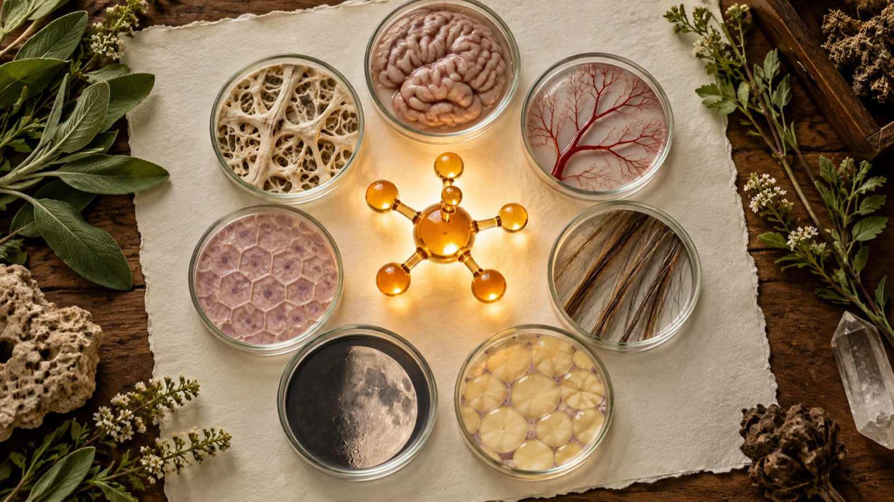
配置見本③図解書斎のエビデンス
「感覚だけでなく、きちんと調べている」。本、白紙ノート、図版、真鍮灯、深いオリーブで語り手の学ぶ姿勢を伝えます。
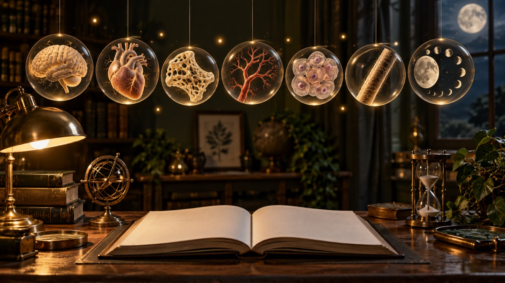
配置見本①問い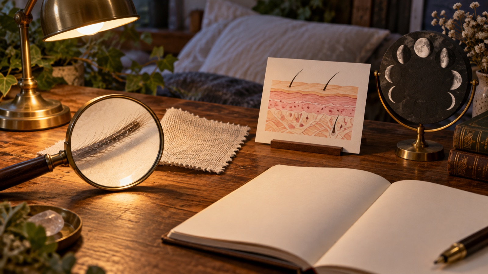
配置見本②日常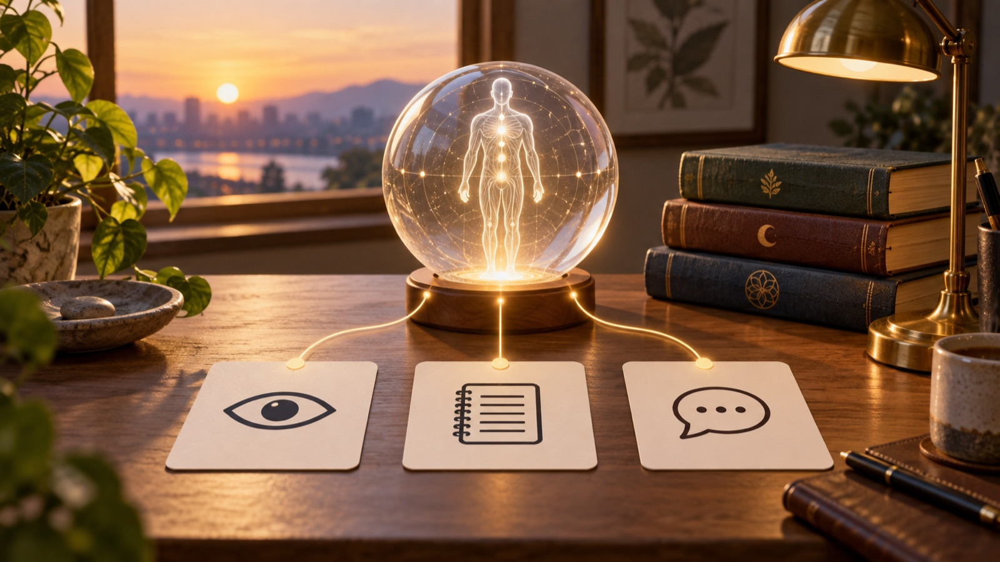
配置見本④まとめ5. 実際に入手できる動画素材候補
個別の公式商品ページまで到達できた候補です。今回はサイト上の説明と仕様を確認し、映像の再生確認はしていません。契約前に必ずプレビュー再生とライセンス画面の保存を行います。
映画的な見せ場に使う優先候補
いずれも人物なし。下表のうち映画的な優先度が高い候補を抜粋したものです。現段階では商品説明・仕様確認までで、再生品質は未確認です。
| 候補・ID | 内容／合わせる話 | 案 | 区分・確認仕様 | 確認状態／外注時の注意 |
|---|---|---|---|---|
| Female Hormone Chemical Structure Envato / BHBVQX5 | ホルモンの化学構造が線画で現れる。用語の初出。 | 1・3 | 定額。$16.50/月〜表示 1920×1080 / 16:9 / 2秒 / loop | 説明・仕様のみ。女性記号が出るため、必要なら該当部分をカット。 |
| Abstract Glowing Neural Network Envato / 29ERDKZ CINEMATIC 1 | 光の粒子が枝分かれを移動。情報伝達・脳の章。 | 1・2 | 定額 4096×2304 / 横 / 10秒 | 説明・仕様のみ。青系素材は暖色グレーディング前提。 |
| Glowing Network Connections Envato / JR8TGD6 | ノード間を光が流れる抽象ネットワーク。全身のつながり。 | 1・2 | 定額 3840×2160 / 16:9 / 12秒 | 説明・仕様のみ。AI・テクノロジー感を抑える色調整が必要。 |
| Red Blood Cells Streaming Envato / K54AEQX CINEMATIC 2 | 赤血球と微粒子が流れる。血管・運搬の比喩。 | 2・4 | 定額 1920×1080 / 16:9 / 17秒 | 説明・仕様のみ。粒子をホルモンそのものと誤認させない字幕が必要。 |
| Blood Cells and Particles Flowing Envato / 2BBKJDU | 血流内を黄色粒子が移動。情報が届く概念場面。 | 2・3 | 定額 1920×1080 / 16:9 / 16秒 | 説明・仕様のみ。商品名とURLの内容差をDL前に再確認。 |
| Female Hormone Levels Graph Adobe Stock / 2047273723 | ホルモン推移の動くグラフ。閉経前後との違いを説明。 | 2・3 | 単品／クレジット。価格未確認 1920×1080・4096×2304 / 10秒 / MOV | 説明・仕様のみ。月経周期図を閉経後に流用しない。Enhanced表示の条件確認。 |
| Estradiol Molecules & System Adobe Stock / 978653808 | エストラジオール分子と器官。用語の初出。 | 1・2・3 | 単品／定額。価格・長さ・解像度は未確認 | 商品説明のみ。再生・医学的表現・利用地域を要確認。 |
| Writer's Desk in Study Envato / C45WQYY CINEMATIC 4 | 無人の本棚と机をゆっくり横移動。研究・本の紹介。 | 3・5 | 定額 3840×2160 / 16:9 / 10秒 | 説明・仕様のみ。暗部を持ち上げ、神秘演出を強くしすぎない。 |
| Warm Desk Lamp Reveal Envato / SAYYUVJ CINEMATIC 3 | 無人の机で灯りが点灯。章扉・気づきの転換。 | 4・5 | 定額 4096×2160 / 横 / 6秒 | 説明・仕様のみ。点滅は1回に抑え、刺激を避ける。 |
| A Shot of a Desk with Books Pexels / 4124581 | 本・机・ランプの無人ショット。根拠確認、まとめ。 | 3・5 | 無料 3840×2160 / 16:9 / 14秒 | 説明・仕様のみ。作者名・URL・DL日・ライセンス画面を保存。 |
価格は2026-09-19に公式ページ表示で確認した範囲。税・地域・キャンペーン・契約形態で変わるため購入画面を正とします。Envatoの素材を外注編集者へ渡す場合は、契約名義・案件登録・再配布禁止範囲をチーム契約で確認します。
6. 各案の60秒画面構成
音声の意味で切り替えます。図解は短く飛ばさず、8〜14秒の読解時間を確保します。
映画的な尺の配分：60秒のうち動画の見せ場は合計15〜20秒程度。残りは静止画の緩い寄りと、読むために止まる図解です。シネマティックにすることと、全編を動かし続けることは分けます。
案1｜光るからだの地図
| 秒 | 話す要旨 | 区分／素材 | 動き | 字幕 |
|---|---|---|---|---|
| 0–8 | 急に変わった気がする | 静止画① | 中央の光へ3%寄り | 下中央・2行 |
| 8–18 | 肌、髪、眠り | 静止画② | 3円を左から順に強調 | 語句だけ黄マーカー |
| 18–31 | 別々ではないかもしれない | 動画：器官ネットワーク | 暗転せずディゾルブ、光がノード間を移動 | 固定下段 |
| 31–47 | 一枚の地図で見る | 図解③ | 7ノードを3段階表示 | 図を避け左下 |
| 47–60 | 責めずに観察する | 静止画④ | 光の輪をゆっくり一周 | 結論1文を8秒保持 |
案2｜ホルモンの光の旅
| 秒 | 話す要旨 | 区分／素材 | 動き | 字幕 |
|---|---|---|---|---|
| 0–7 | 変化の出発点は見えない | 動画：粒子 | 粒子を追う | 下中央 |
| 7–20 | 肌・髪・眠りへ届く | 静止画② | 枝ごとに発光 | 発光先の反対側 |
| 20–33 | 情報を伝える働き | 動画：血流 | 速度50%、1方向 | 定義を2行 |
| 33–49 | 全身につながる | 図解③ | 中心→7点を順に表示 | 図外の下段 |
| 49–60 | 変化を記録する | 静止画④ | ノート・月・歩行を順に点灯 | 3語＋結論 |
案3｜静かな医学雑誌
| 秒 | 話す要旨 | 区分／素材 | 動き | 字幕 |
|---|---|---|---|---|
| 0–9 | 複数の違和感 | 静止画① | 紙面全体をゆっくり横移動 | 余白へ左揃え |
| 9–23 | 暮らしの小さな変化 | 静止画② | 4コマを意味順に拡大 | 各コマ下ではなく共通下段 |
| 23–39 | 共通する背景 | 図解③ | 中央分子→周辺を段階表示 | 1文を7秒保持 |
| 39–50 | 本・研究で確かめる | 無人机動画 | ゆっくりパン | 出典種別を小さく |
| 50–60 | 今日の観察項目 | 静止画④ | 3物を順に寄り | 3項目を一つずつ |
案4｜自然科学の標本室
| 秒 | 話す要旨 | 区分／素材 | 動き | 字幕 |
|---|---|---|---|---|
| 0–10 | 変化を標本のように眺める | 静止画① | 中央から左右へ視線誘導 | 下中央 |
| 10–23 | 肌・髪・眠り | 静止画② | 金糸に沿って横移動 | 3語を順に |
| 23–40 | 一つの中心から七つへ | 図解③ | シャーレを順に点灯 | 図外の下段 |
| 40–50 | 変化は故障ではない | 粒子動画 | 微粒子だけ静かに動く | 1文を長く保持 |
| 50–60 | 観察して記録する | 静止画④ | 芽へ3%寄り | 結論1行 |
案5｜書斎のエビデンス
| 秒 | 話す要旨 | 区分／素材 | 動き | 字幕 |
|---|---|---|---|---|
| 0–8 | 分からないことを調べる | 静止画① | ランプ点灯→7つの標本 | 下中央 |
| 8–22 | 日常の変化を並べる | 静止画② | 虫眼鏡→図版→月 | 対象を隠さない位置 |
| 22–38 | 研究で分かっている範囲 | 図解③ | 本から図解が立ち上がる | 「分かっている／未確定」を色分け |
| 38–49 | 断定しない | 本棚動画 | ゆっくり右パン | 注意書きを6秒保持 |
| 49–60 | 観察・記録・相談 | 静止画④ | 3カードを順に点灯 | 各語＋最後に1文 |
7. 素材の調達方針・購入優先度
優先1
Envato Elementsを主力候補
分子・血流・神経網・無人書斎を一つの定額で揃えやすい。人物・人型が映る素材は検索結果からも除外します。
優先2
AI生成＋自作図解
チャンネル固有の琥珀・コーラル・セージへ統一。器官地図、7ノード、章扉は購入素材より自作が適する。
必要時のみ
Adobe Stock単品
エストラジオールや特定器官など、正確さが必要で代替できないカットだけ。第1回から一括購入しない。
場面別の判断
| 場面 | 方法 | 理由 |
|---|---|---|
| 臓器・骨格組織・血流 | Envatoを優先 | 動きの品質と解剖表現をゼロから作る負担を減らす |
| 7領域の器官地図・字幕・比較 | 自作図解 | 色・位置・章番号を全動画で統一できる |
| 光の粒子・概念的なホルモン経路 | AI生成 | 固有世界観を作れる。ただし科学的事実の代用にはしない |
| 本・机・光・自然物 | Pexels無料または自分で撮影 | 人を映さず、スマホ撮影でも統一しやすい |
| 本人の数値・体験記録 | 本人データがある場合のみ自作 | 架空の成果を実績として見せない |
| 人物・人型・アバター | 購入・生成しない | 実写・AI・シルエットを問わず完全に除外する |
初回購入案：まず映画的な中核候補の29ERDKZ（神経網）とK54AEQX（血流）、章転換用のSAYYUVJ（灯り）をプレビュー再生。案1＋案2の体内ショットから1本、案5の転換ショットから1本だけを試作に採用します。BHBVQX5（ホルモン構造）は説明力は高いものの、映画的な主役ではないため第2優先です。
8. 未確認事項と次の検証
- 正式な第1回台本と読み上げ尺。確定後、60秒表を実音声のタイムコードへ置換する。
- Envato・Adobe各候補の実プレビュー再生、現行価格、契約名義、外注編集者への素材共有条件。
- 臓器配置・骨格組織・ホルモン経路は、公開前に一次資料または専門家で医学的整合を確認する。
- 字幕フォント・サイズ・セーフマージンは、テレビ／スマホ双方で60秒試写し、50代女性3〜5名の読みやすさ確認を行う。
- AI生成画像は概念図と明記し、診断・治療・効果保証に見える発光演出を避ける。
作成根拠：チャンネル企画書、チャンネル設定、言葉の辞書、制作フォーマット標準（2026-09-19時点）。実台本は未作成。